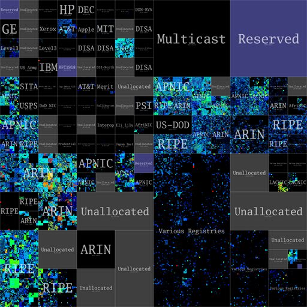

Information
Original visualization by CAIDA (Center for Applied Internet Data Analysis)
This project is an interactive reinterpretation of the IPv4 address space visualization, which maps all IPv4 /24 blocks using a 12th-order Hilbert curve.

IP Info
Target IP: Hover over the image
Tile IP range: Hover over the image